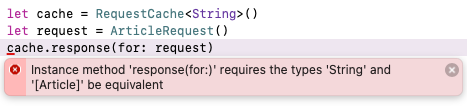

第4章：泛型¶
几乎所有使用 Swift 的人--从完全的初学者到经验丰富的老手--都使用过泛型，不管他们知道与否。泛型为数组和字典、JSON解码、组合发布器以及Swift和iOS的许多其他部分提供动力。因为你已经使用了许多这些功能，所以你知道泛型有多强大的第一手资料。在本章中，你将学习如何利用这种力量来构建泛型驱动的功能。
你将通过继续研究你在上一章中开始的网络库来密切熟悉泛型。这一次，你将对它进行修改，以使用泛型来创建一个更好的 API。你将学习如何编写泛型函数、类和结构，如何使用带有关联类型的协议，什么是类型清除，以及如何把所有这些放在一起，形成一个连贯的API。
不过在这之前，本章先介绍了不少理论，给你提供了一个泛型的参考。别担心--你会在本章后面的内容中亲身体验的
使用泛型入门¶
虽然这不是必须的，但你可以通过创建一个新的普通Swift Xcode playground来学习本节。首先写一个泛型函数：
func replaceNilValues<T>(from array: [T?], with element: T) -> [T] {
array.compactMap {
$0 == nil ? element : $0
}
}
使这个函数通用的一个特殊语法是函数原型中的<T>。小括号(())包围着函数的参数，而角括号(‹›)则包围着函数的类型参数。一个泛型函数接收类型参数作为函数调用的一部分，就像它接收普通函数参数一样。
在这种情况下，只有一个类型参数，叫做T。这个参数的名字不是什么神奇的、特殊的常数--它是用户定义的。在上面的例子中，你可以使用Element或其他任何东西。一旦你在角括号内定义了类型参数，你就可以在函数声明的其余部分，甚至在函数的主体内使用它。
当你调用这个函数时，Swift会用你调用该函数的具体类型替换T。
let numbers: [Int?] = [32, 3, 24, nil, 4]
let filledNumbers = replaceNilValues(from: numbers, with: 0)
print(filledNumbers) // [32, 3, 24, 0, 4]
在该函数的原型中，你定义了该函数接收一个可选的T数组，以及另一个T值。当你用numbers调用该函数时，Swift知道numbers的类型是[Int?]，并能计算出它需要用Int替换T。Swift就是这么聪明。
这让你可以创建一个适用于所有可能类型的单一函数，使你不必复制和粘贴函数。在某种意义上，泛型是协议的反面。协议允许你在多个类型上调用一个函数，每个类型都可以指定其对该函数的实现。泛型允许你在多个类型上调用一个函数，并使用该函数的同实现。
Note
当你的函数是非常通用的，并且类型可以是任何类型时，使用单字母的类型参数名称，如T和U，是可以的。但更多的时候，你的类型参数会有某种语义上的意义。在这些情况下，最好使用一个更具描述性的类型名称，向读者暗示其含义。例如，你可以使用Element、Value、Output等，而不是使用单个字母。
当然，像常规参数一样，你可以有多个逗号分隔的类型参数：
func replaceNils<K, V>(
from dictionary: [K: V?],
with element: V) -> [K: V] {
dictionary.compactMapValues {
$0 == nil ? element : $0
}
}
然而，有时你并不是想要一个适用于所有可能的类型的函数，而是想要一个只适用于其中一些类型的函数。Swift允许你为你的通用类型添加约束。
func max<T: Comparable>(lhs: T, rhs: T) -> T {
return lhs > rhs ? lhs : rhs
}
在上面的例子中，你需要用>运算符比较两个值的能力。不是Swift中的每个类型都可以进行比较（例如，一个View是否比另一个大？） 所以你需要指定T必须符合Comparable。然后，Swift知道T有一个有效的>实现。你把Comparable作为一个通用约束：告诉Swift哪些类型可以接受通用类型参数的方式。
通用类型¶
泛型函数只能带你到这里。在某些时候，你会遇到需要通用类或结构的情况。你已经一直在使用泛型类型了。数组、字典和组合发布器都是通用类型。
请看一个泛型结构：
struct Preference<T> {
let key: String
var value: T? {
get {
UserDefaults.standard.value(forKey: key) as? T
} set {
UserDefaults.standard.setValue(newValue, forKey: key)
}
}
}
和泛型函数一样，泛型类型也有类型参数，就在类型名称旁边声明。上面的例子显示了一个泛型结构，可以存储和检索UserDefaults中的任何类型。
你可以为泛型类型提供一个具体的类型，方法是在类型名称旁边的角括号里写上该类型：
var volume = Preference<Float>(key: "audioVolume")
volume.value = 0.5
在这里，Swift用Float替换了T。用一个具体的类型值替换一个类型参数的过程被称为特殊化。在这种情况下，键入<Float>是必要的，因为Swift没有办法推断出它。在其他情况下，当你在初始化器中使用类型参数时，Swift可以弄清楚你的具体类型是什么，而不需要你写角括号。
但请记住，Preference本身不是一个类型。如果你试图使用Preference作为一个变量的类型，你会得到一个编译器错误。Swift只承认该类型的专门变体，如Preference<String>，是真正的类型。通用类型本身更像是一个蓝图：对你来说是一种脚手架，但对编译器来说用处不大。
带有相关类型的协议¶
除了通用结构、枚举和类之外，你也可以有通用协议。只是我们不这样称呼它们，我们称它们为有关联类型的协议或简称为PATs。PATs的结构有一点不同。与其说泛型是协议的一个参数，不如说它是协议的要求之一，就像协议方法和属性一样
protocol Request {
associatedtype Model
func fetch() -> AnyPublisher<Model, Error>
}
在上面的协议中，Model只是协议的要求之一。为了实现该协议，你需要通过在你的实现中添加一个typealias来声明一个具体的Model类型：
struct TextRequest: Request {
typealias Model = String
func fetch() -> AnyPublisher<Model, Error> {
Just("")
.setFailureType(to: Error.self)
.eraseToAnyPublisher()
}
}
在大多数情况下，Swift可以计算出相关的类型，所以你不需要添加typealias，只要你在实现协议的某个方法时使用该类型：
struct TextRequest: Request {
func fetch() -> AnyPublisher<String, Error> {
// ...
}
}
在上面的例子中，Swift看到你用String来代替Model，所以它可以推断出String是关联类型。
和泛型类型一样，PAT不是类型! 如果你不相信我，可以试着用PAT作为一个类型：
这个错误告诉你，Request只能作为一个通用约束，这在本节的前面已经提到。这句话中隐含的意思是，它不能作为一个类型使用。原因与Swift处理通用类型的方式有关。Swift需要在编译时有一个具体的类型来工作，这样它就可以在程序运行时把你从错误和未定义的行为中拯救出来。一个没有所有类型参数的通用类型不是一个具体类型。根据类型参数的不同，方法和属性的实现会发生变化，对象本身在内存中的布局也会不同。因为Swift总是偏向于谨慎，它迫使你在代码中总是使用具体的、已知的类型。
安全是好的，但你到底如何定义一个PAT数组呢？答案是类型擦除，在本章后面你会看到一个例子。
扩展泛型¶
在上一章中，你已经看到了所有可以扩展协议的方法以及实现这些协议的类型。泛型也不例外! 首先，你可以像其他类型一样扩展泛型，另外的好处是你可以访问扩展中的类型参数：
extension Preference {
mutating func save(from untypedValue: Any) {
if let value = untypedValue as? T {
self.value = value
}
}
}
在上面的例子中，你可以访问Preference的类型参数T，你用它来铸造接收的值。
像协议扩展一样，你也可以约束通用类型的扩展。例如，你可以将一个扩展限制在只有类型参数实现了协议的通用类型上：
extension Preference where T: Decodable {
mutating func save(from json: Data) throws {
let decoder = JSONDecoder()
self.value = try decoder.decode(T.self, from: json)
}
}
在上面的代码中，save将只存在于类型参数为Decodable的Preference上。
你不需要约束扩展，你也可以约束单个方法：
extension Preference {
mutating func save(from json: Data) throws where T: Decodable {
let decoder = JSONDecoder()
self.value = try decoder.decode(T.self, from: json)
}
}
这段代码与你刚才看到的代码块做了同样的事情。但它约束的是方法本身，而不是整个扩展。
扩展PAT的工作方式也是如此。当你进入本章的实践部分时，你会看到一个这样的例子。
Self和元类型¶
"什么是self？"这是一个哲学问题。对于本章来说，更重要的是解释什么是self，以及什么是self和 T.self。这些比哲学问题更容易回答。尽管这一节可能与泛型没有直接关系，但它与类型系统本身有很大关系。而了解Swift中不同的自己和使用类型的方法，将有助于你更好地理解泛型。
正如你已经知道的，self通常是对你当前所处范围的对象的引用。如果你在一个User结构的实例方法中使用self，self将是该结构的实例。到目前为止，这是很直接的。然而，当你在一个类的方法中时，self不可能是对一个实例的引用，因为没有实例。你是在类的本身。
class Networker {
class func whoAmI() {
print(self)
}
}
Networker.whoAmI() // "Networker"
在类和静态方法中，self具有当前类型的值，而不是实例。当你想一想，这是有道理的。静态和类方法存在于类型上，而不是一个实例。
然而，Swift中的所有值都需要有一个类型，包括上面的self。毕竟，你需要能够把它存储在变量中，并从函数中返回。在类和静态方法中持有self的类型会是什么，你现在知道持有类型？答案是Networker.Type：一个包含所有Networker子类型的类型! 就像Int持有所有的整数值，Int.Type持有所有的Int类型值。这些容纳其他类型的类型被称为meta-types。这有点让你头晕，对吗？
class WebsocketNetworker: Networker {
class func whoAmI() -> Networker.Type {
return self
}
}
let type: Networker.Type = WebsocketNetworker.whoAmI()
print(type)
在上面的例子中，你声明了一个名为type的元类型变量。这个元类型不仅可以保存Networker类型本身，还可以保存它的所有子类，例如WebsocketNetworker。在协议的情况下，一个协议的元类型（YourProtocol.Type）可以保存协议类型以及符合该协议的所有具体类型。
要将一个类型本身作为一个值使用，例如将其传递给一个函数或存储在一个变量中，你需要使用Type.self：
let networkerType: Networker.Type = Networker.self
由于实际原因，你必须这样做。通常情况下，类型名是用来声明变量或函数参数的类型的。当它们不用于声明类型时，它们被隐含地作为初始化器使用。使用.self可以更清楚地表明你需要的类型是一个值，而不是其他东西的类型，并且你不是在调用一个初始化器。
最后，还有一个大写的Self。值得庆幸的是，这个问题比所有这些元语言都要简单。Self总是它所出现的作用域的具体类型的别名。强调具体是因为Self总是一个具体的类型，即使它被用在一个协议方法中。
extension Request {
func whoAmI() {
print(Self.self)
}
}
TextRequest().whoAmI() // "TextRequest"
当你想从协议方法中返回当前的具体类型时，或者在创建工厂方法时将其作为静态方法中的初始化器时，Self很有用。
理论上讲得够多了。现在是时候启动Xcode并开始使用泛型了。
创建一个通用网络库¶
在Xcode中打开本章资料中提供的启动项目。这个项目几乎就是你在前一章写的那个项目。如果你还没有，请阅读前一章来熟悉这个项目。这是一个小小的raywenderlich.com客户端应用程序，它使用了你的由协议驱动的网络库。

在这一章中，你将扩展这个库，使用泛型来为你的用户提供一个更漂亮的API。
让Networker成为泛型¶
你将首先在Networker.swift中添加一个泛型函数，它可以下载一个Decodable类型并对其进行解码。在Networking中添加以下函数原型：
func fetch<T: Decodable>(url: URL) -> AnyPublisher<T, Error>
fetch(url:)是一个有一个叫做T的通用类型参数的通用函数。你声明T是一个类型，必须符合Decodable。一旦你声明T是一个类型参数，你就可以在类型签名的其他地方使用它--例如，作为返回值。
接下来，在Networker中实现这个方法：
func fetch<T: Decodable>(url: URL) -> AnyPublisher<T, Error> {
URLSession.shared.dataTaskPublisher(for: url)
.map { $0.data }
.decode(type: T.self, decoder: JSONDecoder())
.eraseToAnyPublisher()
}
因为你可以访问通用类型参数T，你可以在函数的主体中使用它，将收到的数据解码成T。Swift会用函数被调用的任何具体类型来替换T。因为你声明了T符合Decodable，编译器对你的代码很满意。如果有人试图用一个非Decodable类型（如UIImage）来调用这个函数，编译器会抛出一个错误。
使用PATs¶
当你有快速的一次性请求时，使用通用函数是不错的。但是如果能够创建可重复使用的请求，你就可以在代码中的任何地方发射请求。要做到这一点，你要把Request变成一个有关联类型的协议。打开Request.swift，在协议中添加以下两行。
associatedtype Output
func decode(_ data: Data) throws -> Output
The Output type tells the user what this request is supposed to fetch. It can be an Article, [Articles], User, etc. The decode(_:) function is responsible for converting the data received from URLSession into the output type.
Next, add a default implementation of decode(_:) to the bottom of the file:
Output类型告诉用户这个请求应该获取什么。它可以是Article、[Articles]、User，等等。decode(_:)函数负责将从URLSession收到的数据转换为输出类型。
接下来，在文件的底部添加decode(_:)的默认实现：
extension Request where Output: Decodable {
func decode(_ data: Data) throws -> Output {
let decoder = JSONDecoder()
return try decoder.decode(Output.self, from: data)
}
}
当你创建一个类型符合Decodable的Request实现时，你会免费得到这个实现。它将尝试使用一个JSON解码器来返回Output类型。
因为raywenderlich.com API提供的JSON响应不一定与你项目中定义的模型相匹配，你将不能使用这个默认的实现。你将在ArticleRequest.swift中提供你自己的。
在该结构中添加一个新的方法：
func decode(_ data: Data) throws -> [Article] {
let decoder = JSONDecoder()
let articlesCollection = try decoder.decode(Articles.self, from: data)
return articlesCollection.data.map { $0.article }
}
你首先将收到的数据解码为Articles，这是一个与API的响应相匹配的辅助结构。然后将其转换为Article的数组并返回。注意你没有指定Output是[Article]。因为你把它作为decode(_:)的返回类型，Swift可以推断出Output的类型，而不用你说。
接下来，你也要为图片实现decode(_:)。打开ImageRequest.swift，在该结构中添加一个枚举：
enum Error: Swift.Error {
case invalidData
}
你创建了一个自定义枚举来表示在解码图像时可能发生的不同种类的错误。在这种情况下，你将只使用一个错误，但你可以在你自己的代码中扩展这个错误，以使其更具描述性。通过符合Swift的Error类型，你可以获得使用这个枚举作为Combine publisher的错误类型的能力，或者将其与throw关键字一起使用。
最后，在结构中实现decode(_:)。
func decode(_ data: Data) throws -> UIImage {
guard let image = UIImage(data: data) else {
throw Error.invalidData
}
return image
}
你尝试将数据转换为UIImage。如果不成功，你就抛出你刚才声明的错误。
类型限制¶
现在你已经对Request做了修改，现在是时候在Networker.swift中使用这些修改了。你可能已经注意到一个奇怪的编译器错误。"协议Request只能作为一个通用约束使用，因为它有Self或相关的类型要求"。
早些时候，我提到具有关联类型的协议本身并不是类型，尽管它们可能表现得像类型。相反，它们是类型约束。
将Networking中fetch(_:)的声明改为如下。
func fetch<R: Request>(_ request: R) -> AnyPublisher<R.Output, Error>
你把fetch(_:)转换为R类型上的通用函数，代表任何请求。你知道这是一个请求，因为你声明该类型必须符合Request。然后你使用Request的相关Output类型返回一个发布者。在这里，你不再把Request作为一个具体的类型。相反，你把它作为R的约束条件，所以编译器错误消失了。
接下来，改变Networker中的fetch(_:)，以符合新的协议要求：
func fetch<R: Request>(_ request: R) -> AnyPublisher<R.Output, Error> {
var urlRequest = URLRequest(url: request.url)
urlRequest.httpMethod = request.method.rawValue
urlRequest.allHTTPHeaderFields = delegate?.headers(for: self)
var publisher = URLSession.shared
.dataTaskPublisher(for: urlRequest)
.compactMap { $0.data }
.eraseToAnyPublisher()
if let delegate = delegate {
publisher = delegate.networking(self, transformPublisher: publisher)
}
return publisher.tryMap(request.decode).eraseToAnyPublisher()
}
除了几个关键的变化之外，这个函数基本保持不变。首先，你改变了声明，使其成为一个通用函数。其次，你在结尾处添加了一行，试图调用Request的decode(_:)函数来返回Output的相关类型。
现在你已经做了所有这些修改，你终于可以按照预期使用网络器了。打开ArticlesViewModel.swift。
首先，删除fetchArticles中的.tryMap([Article].init)一行。因为Request为你做了这个，你不再需要这一行。此外，因为ArticleRequest声明[Article]为其Output类型，Swift知道从发布者那里发布[Article]值，所以类型系统很高兴。
接下来，在fetchImage中，将整个fetch(_:)调用链替换为以下内容：
let request = ImageRequest(url: article.image)
networker.fetch(request)
.sink(receiveCompletion: { completion in
switch completion {
case .failure(let error): print(error)
default: break
}
}, receiveValue: { [weak self] image in
self?.articles[articleIndex].downloadedImage = image
})
.store(in: &cancellables)
同样，没有必要将任何东西转换为UIImage，因为ImageRequest为你做了这个。相反，你可以在图片到达时抓取它，如果没有，就打印出一个错误。
建立并运行该项目。
你应该看到raywenderlich.com的文章列表，以及它们的图片。恭喜你，你刚刚用泛型做了一个可以工作的网络库 不过，不要满足于你的成就。你仍然可以通过使用泛型添加缓存来进一步改进这个库。
用类型擦除法添加缓存¶
在上一章中，你在视图模型中添加了一个检查，检查图片是否已经被下载，因为每次屏幕上出现一行时都会调用fetchImage函数。这是一种实现缓存的临时方法。你可以通过在你的项目中添加一个通用的缓存类来使这种行为更可重复使用。
创建一个新的Swift文件，名为RequestCache.swift，并在该文件中添加以下内容：
class RequestCache<Value> {
private var store: [Request: Value] = [:]
}
你创建了一个新的通用类，在一个普通的Swift字典内的内存缓存中存储请求响应。你将根据获取响应的请求来存储响应，这样你就可以很容易地把一个请求和它的响应联系起来。
你可能会注意到一个编译器错误。这个错误就是你之前看到的那个。"协议Request只能作为一个通用约束，因为它有Self或相关的类型要求"。早些时候，你通过不直接使用Request类型而不是把它作为一个约束来修复这个错误。
但在这种情况下，这是不可能的。你不能约束一个字典的键--它们都需要是相同的具体类型。在你需要使用一个具有关联类型的协议作为具体类型的情况下，你需要采用类型擦除。你可以把PAT看作是通用协议。而类型擦除，正如它的名字所暗示的，是一种通过去除类型信息将通用协议转换成具体类型的方法。
前往Request.swift，在文件的底部添加一个新的结构：
struct AnyRequest: Hashable {
let url: URL
let method: HTTPMethod
}
这个结构是实现类型擦除的原因。你可以将任何Request，无论其相关类型如何，转换为AnyRequest的实例。AnyRequest只是一个普通的Swift结构，没有任何泛型。所以，自然而然地，你已经失去了类型信息。你不能用AnyRequest来使你的代码更加类型安全。但有时你可以不用丢弃类型信息，让你的代码写得更容易。
现在，你可以回到RequestCache.swift，在store的声明中使用类型消除的结构而不是Request：
private var store: [AnyRequest: Value] = [:]
你不是唯一一个以这种方式使用类型清除的人。很多苹果公司的API都使用同样的模式，比如Combine的AnyCancellable或AnyPublisher。AnySequence、AnyIterator和AnyCollection可以帮助你更容易地创建自己的序列和集合。SwiftUI的AnyView允许你在同一数据结构中存储不同类型的视图。这些只是几个例子，告诉你类型擦除是Swift的一种常见模式。因为该模式很常见，熟悉它将有助于你理解现有的API，以及在未来创建新的API。
获取并保存一个响应¶
现在你可以继续编写你的类。你将为这个类添加两个方法，一个是获取一个存储的响应，另一个是保存一个响应。在你刚刚声明的属性下面添加一个新方法：
func response<R: Request>(for request: R) -> Value?
where R.Output == Value {
let erasedRequest = AnyRequest(url: request.url, method: request.method)
return store[erasedRequest]
}
当有人想为一个给定的请求检索一个已经存储的响应时，这个函数将被调用。这个函数的原型可能看起来有点复杂，所以把它分解一下会有帮助。首先，你声明一个必须符合Request的通用参数R。然后你接收一个相同类型的参数，并返回一个Value的实例，即RequestCache类的通用类型参数。最后，你指定R的相关Output类型必须与该类的类型参数相同。
函数原型的最后一点验证了没有人会意外地用错误的请求调用该函数。如果缓存存储了图像（RequestCache<UIImage>），只有获取图像的Request可以被检索到（R.Output == UIImage）。如果你试图用不匹配的Request调用该方法，你会得到一个编译器错误：

然而，请记住，这仍然是个通用函数，所以只要输出类型与存储值的类型相符，就可以检索多个Request类型。例如，你可以同时使用AvatarThumbnailRequest和ImageRequest在RequestCache<UIImage>实例上调用这个方法。
在这个方法里面，你通过从提供的请求中构造一个AnyRequest来使用类型擦除，你可以用它来从字典中检索一个值。
接下来，添加一个方法来为一个请求保存一个新的响应：
func saveResponse<R: Request>(_ response: Value, for request: R)
where R.Output == Value {
let erasedRequest = AnyRequest(url: request.url, method: request.method)
store[erasedRequest] = response
}
再一次，你在函数的签名中添加了一个 where 子句，以验证请求类型是否匹配，禁止意外的错误输入。正如你在response(for:)中所做的那样，你使用类型擦除来在字典中存储一个新的响应。
现在你有了一个通用的缓存，你可以创建一个缓存来存储你所有下载的图像。打开Networking.swift，给Networker添加一个新的属性：
private let imageCache = RequestCache<UIImage>()
你将使用这个实例来存储图像请求响应。
接下来，给这个类添加一个新的（未完成的）方法：
func fetchWithCache<R: Request>(_ request: R)
-> AnyPublisher<R.Output, Error> where R.Output == UIImage {
if let response = imageCache.response(for: request) {
return Just<R.Output>(response)
.setFailureType(to: Error.self)
.eraseToAnyPublisher()
}
}
你将在稍后完成这个方法。
你创建了一个新的通用方法，接收一个请求并返回一个发布者，就像fetch(_:)。但是这个方法使用缓存来检索已经存储的响应，如果没有，则存储新的响应。这个函数的原型声明这个方法只能被Output类型为UIImage的请求使用，因为你目前只缓存UIImage的实例。
在这个方法中，你首先检查一个响应是否已经被缓存了。如果是的话，你返回一个使用Just的发布者，发布缓存的值。
用下面的代码完成该方法的底部：
return fetch(request)
.handleEvents(receiveOutput: {
self.imageCache.saveResponse($0, for: request)
})
.eraseToAnyPublisher()
如果没有缓存的响应，你可以使用fetch(_:)来返回一个新的发布器。你还订阅了发布者的输出事件，这样你就可以在缓存中存储响应。
接下来，将你的新方法添加到Networking中：
func fetchWithCache<R: Request>(_ request: R)
-> AnyPublisher<R.Output, Error> where R.Output == UIImage
现在你在Networker中拥有了新的缓存方法，现在是时候从视图模型中使用它了。打开ArticlesViewModel.swift，将fetchImage改为以下内容：
func fetchImage(for article: Article) {
guard let articleIndex = articles.firstIndex(
where: { $0.id == article.id }) else {
return
}
let request = ImageRequest(url: article.image)
networker.fetchWithCache(request)
.sink(receiveCompletion: { error in
print(error)
}, receiveValue: { image in
self.articles[articleIndex].downloadedImage = image
})
.store(in: &cancellables)
}
你不再需要在这里执行任何检查。Networker负责所有的缓存，让视图模型专注于准备视图的数据，而不是担心存储请求。
建立并运行该项目。它应该像以前一样工作，只是现在你有了一个更漂亮的API。
关键点¶
- 方法、结构、枚举和类都可以通过在角括号内添加类型参数而成为泛型。
- 通过使用带有关联类型的协议，协议也可以是通用的。
self在静态方法和计算属性中具有当前类型的值，在这些情况下，self的类型是一个meta-type。Self总是具有当前具体类型的值。- 你可以使用带有
generic constraints的扩展，使用where关键字来扩展通用类型，当它们的类型参数满足特定要求时。 - 你也可以通过使用
where关键字使方法本身特殊化。 - 使用类型擦除来使用泛型和
PAT作为常规类型。
接下来去哪里？¶
现在你对泛型已经比较熟悉了，你可以探索Swift本身的许多泛型。比如说：
Array(https://bit.ly/3tzPr9V)是一个通用结构。Collection(https://bit.ly/39WVNbJ)是一个PAT。AnyHashable(https://bit.ly/3p4rwMw) 是一个关于Swift如何使用类型擦除的例子。
如果你想了解更多关于泛型的介绍，请看Swift泛型（扩展） (https://apple.co/3cNKeW7))WWDC 2018会议。
如果你想了解更多关于泛型如何在内存中实现和布局的幕后信息，请看了解Swift性能 (https://apple.co/2YTlQtT) WWDC 2016会议。